MonomialFactory¶
-
class
otlm.MonomialFactory(*args)¶ Canonical monomial univariate polynomial family.
- Available constructor:
- MonomialFactory()
See also
StandardDistributionPolynomialFactoryNotes
Any sequence of orthogonal polynomials has a recurrence formula relating any three consecutive polynomials as follows:
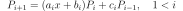
The recurrence coefficients for the monomials come analytically and read:
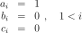
Examples
>>> import otlm >>> monomial_factory = otlm.MonomialFactory() >>> for i in range(3): ... print(monomial_factory.build(i)) 1 X X^2
Methods
build(*args)Build the 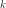-th order orthogonal univariate polynomial. buildCoefficients(*args)Build the -th order orthogonal univariate polynomial coefficients. buildRecurrenceCoefficientsCollection(*args)Build the recurrence coefficients. getClassName()Accessor to the object’s name. getId()Accessor to the object’s id. getMeasure()Accessor to the associated probability measure. getName()Accessor to the object’s name. getNodesAndWeights(*args)Build the -th order quadrature scheme. getRecurrenceCoefficients(*args)Accessor to the recurrence coefficients of the -th order. getRoots(*args)Accessor to the recurrence coefficients of the -th order. getShadowedId()Accessor to the object’s shadowed id. getVisibility()Accessor to the object’s visibility state. hasName()Test if the object is named. hasVisibleName()Test if the object has a distinguishable name. setName(*args)Accessor to the object’s name. setShadowedId(*args)Accessor to the object’s shadowed id. setVisibility(*args)Accessor to the object’s visibility state. -
__init__(*args)¶ x.__init__(…) initializes x; see help(type(x)) for signature
-
build(*args)¶ Build the -th order orthogonal univariate polynomial.
Parameters: - k : int, 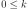
Polynomial order.
Returns: - polynomial :
OrthogonalUniVariatePolynomial Requested orthogonal univariate polynomial.
Examples
>>> import openturns as ot >>> polynomial_factory = ot.HermiteFactory() >>> print(polynomial_factory.build(2)) -0.707107 + 0.707107 * X^2
-
buildCoefficients(*args)¶ Build the -th order orthogonal univariate polynomial coefficients.
Parameters: - k : int,
Polynomial order.
Returns: - coefficients :
Point Coefficients of the requested orthogonal univariate polynomial.
Examples
>>> import openturns as ot >>> polynomial_factory = ot.HermiteFactory() >>> print(polynomial_factory.buildCoefficients(2)) [-0.707107,0,0.707107]
-
buildRecurrenceCoefficientsCollection(*args)¶ Build the recurrence coefficients.
Build the recurrence coefficients of the orthogonal univariate polynomial family up to the -th order.
Parameters: - k : int,
Polynomial order.
Returns: - recurrence_coefficients : list of
Point All the tecurrence coefficients up to the requested order.
Examples
>>> import openturns as ot >>> polynomial_factory = ot.HermiteFactory() >>> print(polynomial_factory.buildRecurrenceCoefficientsCollection(2)) [[1,0,0],[0.707107,0,-0.707107]]
-
getClassName()¶ Accessor to the object’s name.
Returns: - class_name : str
The object class name (object.__class__.__name__).
-
getId()¶ Accessor to the object’s id.
Returns: - id : int
Internal unique identifier.
-
getMeasure()¶ Accessor to the associated probability measure.
Returns: - measure :
Distribution The associated probability measure (according to which the polynomials are orthogonal).
Notes
Two polynomials P and Q are orthogonal with respect to the probability measure 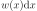 if and only if their dot product:
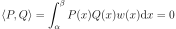
where 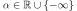 and 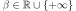.
Examples
>>> import openturns as ot >>> polynomial_factory = ot.HermiteFactory() >>> print(polynomial_factory.getMeasure()) Normal(mu = 0, sigma = 1)
- measure :
-
getName()¶ Accessor to the object’s name.
Returns: - name : str
The name of the object.
-
getNodesAndWeights(*args)¶ Build the -th order quadrature scheme.
Associated with the orthogonal univariate polynomials family.
Parameters: - k : int, 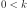
Polynomial order.
Returns: Examples
>>> import openturns as ot >>> polynomial_factory = ot.HermiteFactory() >>> nodes, weights = polynomial_factory.getNodesAndWeights(3) >>> print(nodes) [-1.73205,...,1.73205] >>> print(weights) [0.166667,0.666667,0.166667]
-
getRecurrenceCoefficients(*args)¶ Accessor to the recurrence coefficients of the -th order.
Of the orthogonal univariate polynomial.
Parameters: - k : int,
Polynomial order.
Returns: - recurrence_coefficients :
Point The recurrence coefficients of the -th order orthogonal univariate polynomial.
Notes
Any sequence of orthogonal polynomials has a recurrence formula relating any three consecutive polynomials as follows:
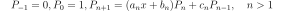
Examples
>>> import openturns as ot >>> polynomial_factory = ot.HermiteFactory() >>> print(polynomial_factory.getRecurrenceCoefficients(3)) [0.5,0,-0.866025]
-
getRoots(*args)¶ Accessor to the recurrence coefficients of the -th order.
Of the orthogonal univariate polynomial.
Parameters: - k : int, 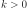
Polynomial order.
Returns: - roots :
Point The roots of the -th order orthogonal univariate polynomial.
Examples
>>> import openturns as ot >>> polynomial_factory = ot.HermiteFactory() >>> print(polynomial_factory.getRoots(3)) [-1.73205,...,1.73205]
-
getShadowedId()¶ Accessor to the object’s shadowed id.
Returns: - id : int
Internal unique identifier.
-
getVisibility()¶ Accessor to the object’s visibility state.
Returns: - visible : bool
Visibility flag.
-
hasName()¶ Test if the object is named.
Returns: - hasName : bool
True if the name is not empty.
-
hasVisibleName()¶ Test if the object has a distinguishable name.
Returns: - hasVisibleName : bool
True if the name is not empty and not the default one.
-
setName(*args)¶ Accessor to the object’s name.
Parameters: - name : str
The name of the object.
-
setShadowedId(*args)¶ Accessor to the object’s shadowed id.
Parameters: - id : int
Internal unique identifier.
-
setVisibility(*args)¶ Accessor to the object’s visibility state.
Parameters: - visible : bool
Visibility flag.